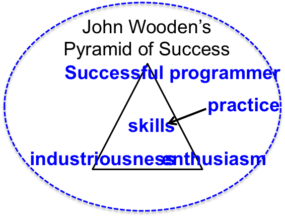

Wooden's Pyramid
I am going to add some more words to this first inspiration to see how it scales down the page. Will it add more space or add a slider.

What to be
As you contemplate your future as a grownup, consider reading the following articles. If you do not have time to read the entire articles, a brief summary is provided for you.
Four Steps to Choosing Your Major"
How to Live Wisely
Four Steps to Choosing Your Major - Summary
- Separate your goals from other people’s goals for you. I am sure everyone is providing you with lots of advice. Do not ignore advice, but realize that you cannot pursue a major just because your parents think you will get a good job.
- Forget passion; follow an interest. Often passion develops over time. When I was in college, I liked my computer science classes, but I did not have a passion for programming. Over the years, my like gradually transformed into a passion.
- Put your decisions in real-world context. You may choose a major based upon future economic returns or based upon helping humanity. Whatever your reasons, make sure you think in terms of the real world. Suppose for example, you want to make lots of money as a lawyer. This goal can be achieved, but you should study the plight of those pursuing law school. Many graduate with lots of debt, and they have to accept jobs that are not high paying lawyers.
- Yes, you do have to be good at it. Be flexible. Whatever you pursue, realize that you have to be good. This means putting in the hours of practice to become good. If you have a degree in Computer Science, but you are not a good programmer, your employers will soon discover.
How to Live Wisely - Summary
- List how you want to spend your time at college. Perhaps answer the question, “What matters to you?” After you have created this list, write what you actually spend you time doing. Now examine how much the lists overlap.
- When choosing a major, examine how you spend your spare time. One student was deliberating between Political Science and Biology, but the student did not spend any spare time in labs. Perhaps Biology is not for her.
- If you had a choice to be exceptional at one thing, or pretty good at several; which would you choose. This could be helpful in organizing your curriculum.
- This exercise presents a parable of a happy fisherman living a simple life on a small island.
The fellow goes fishing for a few hours every day. He catches a few fish, sells them to his friends, and enjoys spending the rest of the day with his wife and children, and napping. He couldn’t imagine changing a thing in his relaxed and easy life. A recent M.B.A. visits this island and quickly sees how this fisherman could become rich. He could catch more fish, start up a business, market the fish, open a cannery, maybe even issue an I.P.O. Ultimately he would become truly successful. He could donate some of his fish to hungry children worldwide and might even save lives.
“And then what?” asks the fisherman.
“Then you could spend lots of time with your family,” replies the visitor. “Yet you would have made a difference in the world. You would have used your talents, and fed some poor children, instead of just lying around all day.”
How does this parable align with your visions of life?
Gusty in College
I went to college a long time ago. In some ways, my college experience was different than yours, but in some ways it was the same. We each have to manage our time such that we accomplish our studies while at the same time participate in social activities. I did not have a cell phone to distract me, but I did have other distractions. I loved to shoot basketball, play cards, play Monopoly, shoot pool, throw frisbees, and whatever else was happening around campus. These activities were fun. I did not have to study a lot in high school and this gave me a false impression for correct study. Early on I would go to class and waste time between classes. In the evening, someone would want to go to the gym or play cards and I would join in. The next think I knew, it was time to submit an assignment and I had not completed it properly. By the end of my sophomore year, I had figured out a good system. I treated my college day as a job. I would attend class and study throughout the day. After supper, my studies were done. I used this time to socialize.
Inspirational Quotes
"There is only one way to avoid criticism: do nothing, say nothing, and be nothing." -Aristotle
"We can do not great things, only small things with great love." -Mother Teresa
"If you obey all rules, you miss all the fun." -Katharine Hepburn
"Do what you can, with what you have, where you are." -Theodore Roosevelt
"If you want something said, ask a man; if you want something done, ask a woman." -Margaret Thatcher
"The smallest good deed is better than the greatest intention." -John Wooden
"Your time is limited, so don't waste it living someone else's life." -Steve Jobes
"No one can make you feel inferior without your consent." -Eleanor Roosevelt
"A person who never made mistakes never tried anything new." -Albert Einstein
"I never dreamed about success. I worked for it." -Estee Lauder